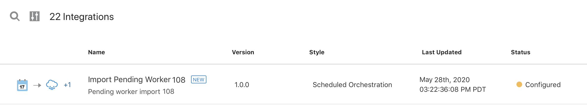
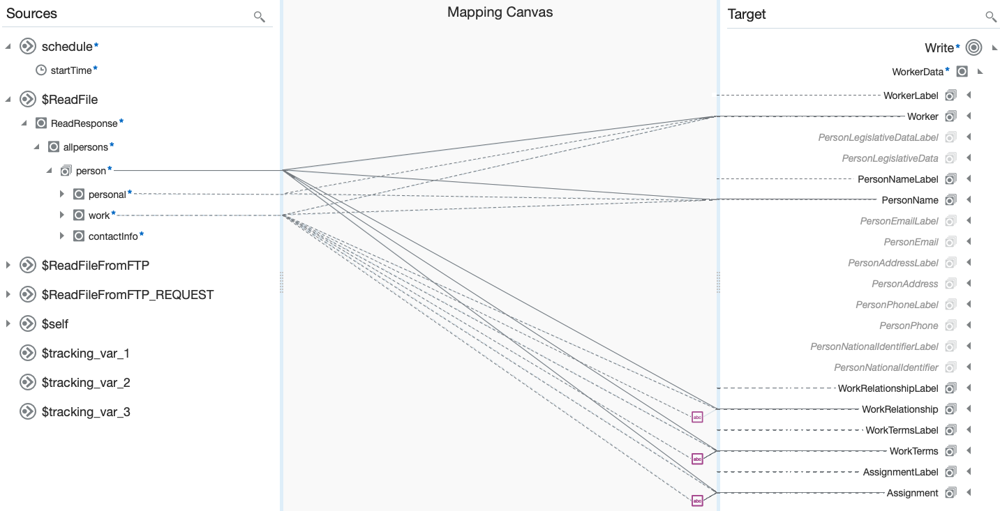
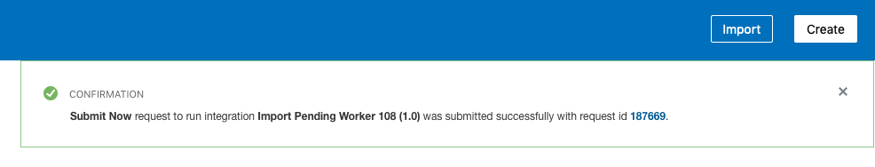

Background
You can use Oracle Integration (OIC) mapping to transform source data at runtime. If you combine this with native schema formatting for output file definition, you can produce output files in any desired format.
This lab uses Oracle Integration to automate the following tasks:
- Read a file that contains new hired employes from an external FTP server.
- Transform and format the data to generate an DAT file that can be used in HCM.
- Import the DAT file to HCM Cloud using the HCM Data Loader, to create pending workers.
The following diagram shows the interaction between the systems involved in this use case:
Before You Begin
Some steps in this tutorial have a  icon next to them. Click this
icon to copy the snippet of text to your clipboard and then paste where needed.
icon next to them. Click this
icon to copy the snippet of text to your clipboard and then paste where needed.
Your instructor will provide you the information you need to access the environments used in this lab.
For this lab we will provide you the following:
- Oracle Integration
- ERP Cloud R13+
- Postman
- An FTP server
The PDF mentions the file personsSchema.xsd here. I did a search and couldn't find where it was used. Can you please clarify and let me know if this is still needed?
Get Your Oracle Integration (OIC) Environment
Select your environment and enter your user number to get the information to access Oracle Integration.
Oracle Integration Environment:
- URL:
Select an environment from the Oracle Integration Environment list. - User Name:
- Password: will be provided during the training session.
Get Your ERP Cloud Environment
Select your environment to get the information to access Oracle ERP Cloud.
ERP Cloud Environment:
- URL:
Select an environment from the ERP Cloud Environment list. - User Name:
- Password: will be provided during the training session.
Get Your FTP Environment
Select your environment to get the information to access the FTP server.
Please let me know the connection information for the FTP you will be using in the training so that I can add it to the list.
FTP Environment:
- URL:
- User Name:
- Password: will be provided during the training session.
Sign In
Open your Oracle Integration instance.
Enter your user name and password.
- Your user name is:
- Your password will be provided by the instructor during the training session.
- Your user name is:
Click Sign In.
The Home page appears.
You are now logged in and ready to use Oracle Integration.

Clone the Integration Using REST
- Download the OICRestLab.postman_collection.json file.
- Open Postman.
- Make sure the sidebar is visible.
Import the file you just downloaded.
The Collections tab in the side bar shows a new node called OICRestLab with the operations clone and activate.
- Select the clone operation.
Edit the post URL and replace <oic_host> with:
.The resulting URL is:
/icsapis/v2/integrations/IMPORT_PENDING_WORKER|01.00.0000/cloneConfigure the authorization to use Basic Auth and your Oracle Integration credentials.
Oracle Integration User Name:
Select your Oracle Integration environment in the Before You Begin section to get a customized user.
The password will be provided by your instructor during the training session.
Edit the body of the request and replace
<StudentID>with.The resulting body is:
{ "code":"IMPORT_PENDING_WORKER_", "version":"01.00.0000", "name":"Import Pending Worker ", "description":"Pending worker import " }Send the request.
The response status should be
204.- Open Oracle Integration.
In the Main Menu, click Integrations, and then click Integrations.
Notice that the cloned integration appears in the Integrations list.

Activate the Integration Using REST
- Select the activate operation.
Edit the post URL and replace:
- <oic_host> with
. - StudentID with
.
The resulting URL is:
/icsapis/v2/integrations/IMPORT_PENDING_WORKER_|01.00.0000- <oic_host> with
Configure the authorization to use Basic Auth and your Oracle Integration credentials.
Oracle Integration User Name:
Select your Oracle Integration environment in the Before You Begin section to get a customized user.
The password will be provided by your instructor during the training session.
Send the request.
The response status should be
200 OK.- Open Oracle Integration.
In the Main Menu, click Integrations, and then click Integrations.
Notice that the cloned integration status is Activated.
Understand HCM Data Loader DAT Files
Use the NXSD native schema to generate a DAT file compatible with the HCM Data Loader in an integration.
The NXSD schema defines the structure of the output file (fields) and the formatting of the data.
- Download the worker-hdl-lab-exercise.nxsd file.
- Open the file in a text editor.
Locate the
schemaelement at the beginning of the file.This element defines the global schema attributes. You must include a similar
schemaelement in the NXSD schemas you build for HDL objects. You will need to change the object names.<schema xmlns="http://www.w3.org/2001/XMLSchema" xmlns:nxsd="http://xmlns.oracle.com/pcbpel/nxsd" xmlns:tns="http://supoc.oracle.com/WorkerData" targetNamespace="http://supoc.oracle.com/WorkerData" elementFormDefault="qualified" attributeFormDefault="unqualified" nxsd:stream="chars" nxsd:version="NXSD" nxsd:encoding="UTF8" nxsd:encodeLineTerminators="false" >Locate the
WorkerDataelement.This element defines the set of objects and child objects required to load this business object to the HCM Data Loader.
The following elements are specified for each of the objects in the NXSD schema:
ObjectLabelelement: inserts aMETADATAline in theDATfile.
For example:WorkerLabelObjectelement: inserts aMERGEline in theDATfile.
For example:Worker
The format for the lines is specified in the
nxsd:startsWidthattribute with the valuesMETADATAfor the object label andMERGEfor the object.<element name="WorkerData"> <complexType> <choice maxOccurs="unbounded" minOccurs="0"> <element ref="tns:WorkerLabel" minOccurs="0" maxOccurs="unbounded" nxsd:startsWith="METADATA|Worker|" /> <element ref="tns:Worker" minOccurs="0" maxOccurs="unbounded" nxsd:startsWith="MERGE|Worker|" /> <element ref="tns:PersonLegislativeDataLabel" minOccurs="0" maxOccurs="unbounded" nxsd:startsWith="METADATA|PersonLegislativeData|" /> <element ref="tns:PersonLegislativeData" minOccurs="0" maxOccurs="unbounded" nxsd:startsWith="MERGE|PersonLegislativeData|" /> <element ref="tns:PersonNameLabel" minOccurs="0" maxOccurs="unbounded" nxsd:startsWith="METADATA|PersonName|" /> <element ref="tns:PersonName" minOccurs="0" maxOccurs="unbounded" nxsd:startsWith="MERGE|PersonName|" /> <element ref="tns:PersonEmailLabel" minOccurs="0" maxOccurs="unbounded" nxsd:startsWith="METADATA|PersonEmail|" /> <element ref="tns:PersonEmail" minOccurs="0" maxOccurs="unbounded" nxsd:startsWith="MERGE|PersonEmail|" /> <element ref="tns:PersonAddressLabel" minOccurs="0" maxOccurs="unbounded" nxsd:startsWith="METADATA|PersonAddress|" /> <element ref="tns:PersonAddress" minOccurs="0" maxOccurs="unbounded" nxsd:startsWith="MERGE|PersonAddress|" /> <element ref="tns:PersonPhoneLabel" minOccurs="0" maxOccurs="unbounded" nxsd:startsWith="METADATA|PersonPhone|" /> <element ref="tns:PersonPhone" minOccurs="0" maxOccurs="unbounded" nxsd:startsWith="MERGE|PersonPhone|" /> <element ref="tns:PersonNationalIdentifierLabel" minOccurs="0" maxOccurs="unbounded" nxsd:startsWith="METADATA|PersonNationalIdentifier|" /> <element ref="tns:PersonNationalIdentifier" minOccurs="0" maxOccurs="unbounded" nxsd:startsWith="MERGE|PersonNationalIdentifier|" /> <element ref="tns:WorkRelationshipLabel" minOccurs="0" maxOccurs="unbounded" nxsd:startsWith="METADATA|WorkRelationship|" /> <element ref="tns:WorkRelationship" minOccurs="0" maxOccurs="unbounded" nxsd:startsWith="MERGE|WorkRelationship|" /> <element ref="tns:WorkTermsLabel" minOccurs="0" maxOccurs="unbounded" nxsd:startsWith="METADATA|WorkTerms|" /> <element ref="tns:WorkTerms" minOccurs="0" maxOccurs="unbounded" nxsd:startsWith="MERGE|WorkTerms|" /> <element ref="tns:AssignmentLabel" minOccurs="0" maxOccurs="unbounded" nxsd:startsWith="METADATA|Assignment|" /> <element ref="tns:Assignment" minOccurs="0" maxOccurs="unbounded" nxsd:startsWith="MERGE|Assignment|" /> </choice> </complexType> </element>Find the
WokerLabelelement.This element adds the name of the fields to the
METADATAline. Each object requires its corresponding label element.<element name="WorkerLabel"> <complexType> <sequence> <element name="EffectiveStartDateLabel" type="string" nxsd:style="terminated" nxsd:terminatedBy="|" /> <element name="EffectiveEndDateLabel" type="string" nxsd:style="terminated" nxsd:terminatedBy="|" /> <element name="StartDateLabel" type="string" nxsd:style="terminated" nxsd:terminatedBy="|" /> <element name="CategoryCodeLabel" type="string" nxsd:style="terminated" nxsd:terminatedBy="|" /> <element name="ActionCodeLabel" type="string" nxsd:style="terminated" nxsd:terminatedBy="|" /> <element name="DateOfBirthLabel" type="string" nxsd:style="terminated" nxsd:terminatedBy="|" /> <element name="SourceSystemOwnerLabel" type="string" nxsd:style="terminated" nxsd:terminatedBy="|" /> <element name="SourceSystemIdLabel" type="string" nxsd:style="terminated" nxsd:terminatedBy="|" /> <element name="ApplicantNumberLabel" type="string" nxsd:style="terminated" nxsd:terminatedBy="${eol}" /> </sequence> </complexType> </element>Locate the
Workerelement.This element defines the fields required by the HCM Data Loader
Workerobject. The format is defined in thenxsd:terminatedByattribute which adds a separator at the end of each line.<element name="Worker"> <complexType> <sequence> <element name="EffectiveStartDate" type="string" nxsd:style="terminated" nxsd:terminatedBy="|" /> <element name="EffectiveEndDate" type="string" nxsd:style="terminated" nxsd:terminatedBy="|" /> <element name="StartDate" type="string" nxsd:style="terminated" nxsd:terminatedBy="|" /> <element name="CategoryCode" type="string" nxsd:style="terminated" nxsd:terminatedBy="|" /> <element name="ActionCode" type="string" nxsd:style="terminated" nxsd:terminatedBy="|" /> <element name="DateOfBirth" type="string" nxsd:style="terminated" nxsd:terminatedBy="|" /> <element name="SourceSystemOwner" type="string" nxsd:style="terminated" nxsd:terminatedBy="|" /> <element name="SourceSystemId" type="string" nxsd:style="terminated" nxsd:terminatedBy="|" /> <element name="ApplicantNumber" type="string" nxsd:style="terminated" nxsd:terminatedBy="${eol}" /> </sequence> </complexType> </element>Locate the
PersonNameelement.This element defines the fields required by HCM Data Loader
Personobject. The format is defined in thenxsd:terminatedByattribute which adds a separator at the end of each line.<element name="PersonName"> <complexType> <sequence> <element name="PersonIdSourceSystemId" type="string" nxsd:style="terminated" nxsd:terminatedBy="|" /> <element name="EffectiveStartDate" type="string" nxsd:style="terminated" nxsd:terminatedBy="|" /> <element name="EffectiveEndDate" type="string" nxsd:style="terminated" nxsd:terminatedBy="|" /> <element name="LegislationCode" type="string" nxsd:style="terminated" nxsd:terminatedBy="|" /> <element name="NameType" type="string" nxsd:style="terminated" nxsd:terminatedBy="|" /> <element name="FirstName" type="string" nxsd:style="terminated" nxsd:terminatedBy="|" /> <element name="MiddleNames" type="string" nxsd:style="terminated" nxsd:terminatedBy="|" /> <element name="LastName" type="string" nxsd:style="terminated" nxsd:terminatedBy="|" /> <element name="SourceSystemOwner" type="string" nxsd:style="terminated" nxsd:terminatedBy="|" /> <element name="SourceSystemId" type="string" nxsd:style="terminated" nxsd:terminatedBy="${eol}" /> </sequence> </complexType> </element>
Understand the Integration
Open Oracle Integration and click the integration named Import Pending Worker .
The following integration flow appears:
This table briefly describes the different steps in the integration. For more details, you can open the integration and click each of the steps.
I generally call these "activities" not "steps". Please confirm that it is okay to change it to activities here too.
| Step | Type | Description |
|---|---|---|
| Schedule | Schedule | Start of the integration. This step is read-only. |
| Map to ReadFileFromFTP | Map |
This data mapping is empty. Can we remove it from the integration? If we can't, please provide a description. |
| ReadFileFromFTP | FTP Adapter: Download File |
Reads the file from an FTP server. In this lab, you will edit this step to specify the FTP directory where you uploaded the file. |
| ReadFile | Stage File: Read | Reads the file retrieved from the FTP server and loads the data to a schema. This step is read-only. |
| Map to WriteFile | Map | Maps and transforms the data to generate the HCM Data Loader file. This step is read-only. |
| WriteFile | Stage File: Write Files | Write the result of the data mapping and transformation to a virtual directory in Oracle Integration. This step is read-only. |
| ListFile | Stage File: List Files | Returns a list of files that match the a file name pattern of the virtual directory in Oracle Integration. |
| ZipFile | Stage File: Zip Files | Creates a zip file that contains the |
| Map to SendToUCM | Map | Maps the UCM properties required to check in the file to UCM. |
| SendToUCM | Oracle HCM Cloud Endpoint | Checks in the file to UCM using the HCM adapter. |
| Wait | Wait | Waits for 2 minutes. |
| Map to ImportLoadData | Map | Maps the ContentID that was successfully uploaded to UCM. |
| ImportLoadData | Stop | Uploads the file to HCM Cloud using the UCM ContentId |
| Stop | Stop | The end of the integration. |
Edit the ReadFileFromFTP Activity
- Download the persons.xml file.
Log in to the FTP server.
- FTP URL:
- FTP User Name:
- Password: will be provided during the training session.
- FTP URL:
If the following directory doesn't exist in the FTP server, create it:
/upload/public_ftp/- Copy the
persons.xmlfile to the directory mentioned in the previous step. - Select the ReadFileFromFTP activity.
Click
 .
.If I leave the task sequence as the PDF indicates, this step isn't possible. Because you activated the integration when you open it, it's in read-only mode. Did you add the activate step above by mistake? Or did you mean to deactivate the integration and forgot to include it? Please let me know so that I can fix this. As is, this lab can't be run.
- Click the Operations tab.
- In the Input Directory field, enter
/upload/public_ftp/. Click Next.
The Schema page appears.
- Click Next.
Review the summary and click Done.
The FTP Adapter closes and the Update Configuration? dialog appears.
- Click Update.
Understand the Data Mapping
- Select the Map To WriteFile activity.
Click
.The Map page appears.
The Sources section shows all the fields available for mapping.
The Target section shows the
Writehierarchy.This data mapping is a representation of the
Worker.datfile.The PDF says "This is a representation. That this is preceded by the Sources and Target sections and in general by the data mapping. Which of the three are you referring to?
What is the
Worker.datfile and why does it matter to the reader?
Edit the Zip File Action
- Select the Zip File action.
- Click .
Click the Next.
The Configure Operation page appears.
- Click next to the Specify the File Name field.
Edit the expression to use your user number as a prefix:
'_WorkerOutput.zip'This will help you identify your file in UCM and the HCM DataLoader.
Subhani: Can you please either remove the KK prefix in the cloned integration or change it to a number like 11?
- Click Save.
- Click Exit Expression Builder.
- Click Next.
Review the summary and click Done.
The FTP Adapter closes and the Update Configuration? dialog appears.
- Click Update.
- Click Save.
Define the Tracking Fields
Tracking fields specify a unique value to monitor your integration instance.
The tracking field is already defined in the cloned integration. Is this the way it's going to be in the version of the lab available to the public? Do we need to change this step?
On the Integration canvas, click
 ,
and then select Tracking.
,
and then select Tracking.
The Business Identifiers for Tracking dialog appears.
- From the Source section, select startTime, and
then click
 .
.
- Click Save.
- On the Integration canvas, click Save, and then click Close.
Activate the Integration Using REST
- Select the activate operation.
- Edit the post URL and replace:
- <oic_host> with
. - StudentID with
.
- <oic_host> with
Configure the authorization to use Basic Auth and your Oracle Integration credentials.
Oracle Integration User Name:
Select your Oracle Integration environment in the Before You Begin section to get a customized user.
The password will be provided by your instructor during the training session.
Send the request.
The response status should be
200 OK.- Open Oracle Integration.
In the Main Menu, click Integrations, and then click Integrations.
Notice that the cloned integration status is Activated.
Run the Integration
After the status changes to active, click .
- Click Submit Now.
In the Submit Now dialog, click Submit Now.
A confirmation message with a request ID appears.
Click the request ID link in the confirmation message
The Track Runs page appears.
Wait for your integration to complete.
The wait activity is set to 2 minutes so you will have to wait at least 2 minutes.
A confirmation message indicating the integration ran successfully appears. The message contains a Run ID link.
Click the Run ID link.
The Tracking Instances page with the tracking summary for the integration appears.
Click the Start Time link.
This is the tracking field you configured earlier.

The flow for your instance appears. The flow is colored in green to indicate that it ran successfully.
Verify the File Creation in UCM
While the integration is still running you can verify the file was transferred to UCM. After the HCM Data Loader finishes importing and loading the file, it is deleted from UCM and will no longer appear in the UCM search.
Sign in to HCM Cloud using the following information:
Open a browser to sign in to HCM Cloud using the following information:
Click the Main Menu icon.
This is the UI I've been seeing for a week. Is this what you are going to use for the trainings? Please let me know so that I can update the other labs images and instructions.
- Expand Tools and then click File Import and Export.
In the Search section, in the File field, enter
_WorkerOutput.zip.The PDF says to enter XX_Worker.dat but the screenshot shows XX_WorkerOuput.zip. I tried the two and the latter is the one that works. Please confirm that this is what you will be using during the training.
Click Search.
The Search Results section shows the file you uploaded to UCM.
Verify the Data in HCM
Click the Main Menu icon.
- Expand My Client Groups and then click Data Exchange.
In the HCM Data Loader section, click Import and Load Data.
The Data Sets section shows the file you uploaded.
I wasn't able to test this because the upload is failing.
Click the Main Menu icon.
- Expand My Client Groups and then click Person Management.
- In the Name field enter
John Brown. Click Search.
The Search Results section shows the data for John Brown. This confirms that the data was imported to your HCM instance.
I wasn't able to test this because the upload is failing.
Congratulations! You've configured and run an integration to retrieve a file, transform it, and import peding workers to HCM Data Loader. You've also used the Oracle Integration REST API to clone an existing integration and activate it.